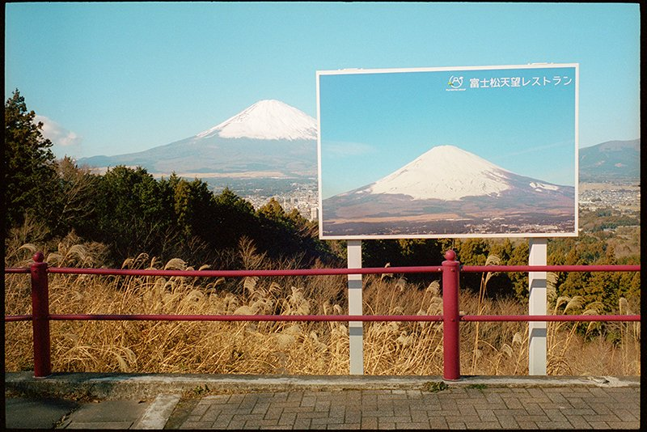
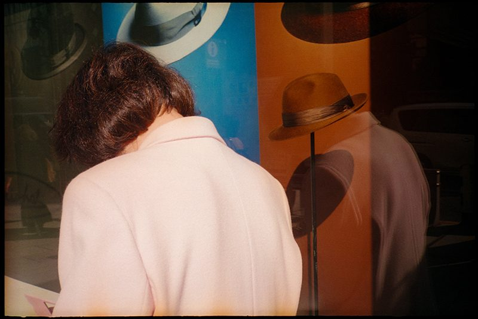
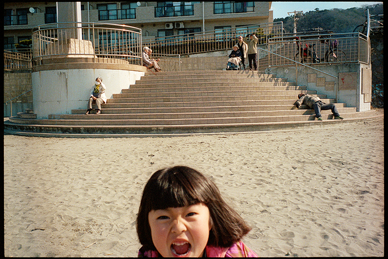

"진실은 언제나 허구보다 더 낯설다."
일본을 대표하는 스트리트 포토그래퍼 Shin Noguchi 신 노구치는 도쿄 출신으로, 현재 가마쿠라에서 약 20년째 거리를 사진에 담고 있는 작가다. 그는 일상에서 마주치는 아주 평범하지만 특별한 순간들을 독특한 시선으로 포착해내는 작가로 유명하다.
노구치는 늘 마크 트웨인의 그 한마디를 자신의 사진 철학으로 삼는다. 그에게 사진이란, 연출된 허구보다 실제 삶에서 우연히 마주하는 진짜 순간들이 훨씬 더 극적이고 아름답다는 믿음에서 시작된다. 실제로 그의 사진들을 보면 마치 미리 연출한 것처럼 느껴질 정도로 절묘한 타이밍과 구성력이 돋보이는데, 이는 전부 현실에서 일어난 찰나를 정확하게 포착한 결과다.
지하철 창문 밖에서 익살스러운 표정으로 장난치는 사람과 피곤에 지쳐 꾸벅꾸벅 졸고 있는 회사원이 한 프레임 안에서 만나기도 하고, 진지한 표정의 군인들이 어린이용 놀이기구 너머로 우연히 액자처럼 포착되기도 한다. 그의 사진 속엔 이렇게 일상과 비일상이 교차하며 묘한 유머와 아이러니가 흐른다.

노구치는 사진에서 객관적인 진실을 담고자 한다. 거리에서 촬영할 때 자신의 주관적인 감정을 최대한 배제하고, 있는 그대로의 순간을 담는 데 집중한다. 그렇게 찍힌 사진들은 보는 사람 누구나 공감할 수 있는 보편적인 이야기를 품고 있다. 덕분에 그의 사진은 일본을 넘어 전 세계 사람들에게 가닿는다.
그의 사진은 주로 컬러로 촬영되는데, 일본 특유의 다채로운 색채를 사실적으로 담기 위한 선택이다. 흑백 사진이 주류였던 일본 스트리트 사진계에서 노구치는 컬러를 통해 일본 거리의 밝고 생생한 모습을 더욱 실감 나게 전달하고 있다. 라이카 카메라와 필름을 즐겨 사용해, 그의 사진에서는 따뜻하고 부드러운 필름 특유의 감성이 함께 묻어난다.
또한 그는 매우 신중하고 인내심 있는 촬영 방식으로도 유명하다. 하루 종일 거리를 걸어도 단지 몇 장만 찍을 정도로, 완벽한 순간을 기다리는 데 시간을 들인다. 절대 몰래 찍거나 힙샷 같은 방식은 사용하지 않으며, 피사체와 직접 눈을 마주치며 찍는 것을 원칙으로 삼는다. 이는 피사체를 향한 존중과 배려가 담긴 태도이며, 그의 사진에 따뜻한 인간미를 더한다.
Shin Noguchi와의 대화
자신을 소개해주세요. 최근 어떤 장면을 즐겨 찍으시는지, 사진을 통해 전하고 싶은 이야기는 무엇인지 간단히 말씀해주시면 좋을 것 같아요.
안녕하세요. 신 노구치입니다. 1976년 도쿄에서 태어나 지금은 가마쿠라에 살며, 가마쿠라와 도쿄 일대를 중심으로 활동하는 스트리트 포토그래퍼입니다.
요즘 가장 즐겨 찍는 대상은 제가 오랫동안 몸담아 온 가마쿠라와 도쿄의 평범한 일상 풍경이에요. '포토제닉한 장소'에서 '포토제닉한 사진'을 찍는 식으로, 결과가 뻔히 보이는 작업에는 전혀 흥미가 없습니다. "어디로 가면 좋은 사진이 찍힐까?" 같은 고민도 거의 하지 않죠.
사진으로 전하고 싶은 메시지는 단순합니다. "당신은 결코 혼자가 아니다. 이 사회에서 애쓰며 살아가는 당신을 누군가는 반드시 지켜보고 있다."
일상의 틈에서 비일상적인 순간을 포착함으로써, 사람들에게 '일상'이라는 개념 자체를 새삼 느껴보게 하고 싶습니다. 누구든 이미 중요한 '개개인'임을 깨달아 주길 바랍니다.

작가님 사진은 따뜻하고 자연스럽게 다가옵니다. 타인을 바라볼 때의 어떤 마음가짐이 사진 속 온기로 이어진다고 생각하시나요?
제가 셔터를 누르는 이유는 "이 장면이 필요하다" 같은 계산이 아닙니다. 눈앞의 광경에서 무언가를 '느끼는' 순간 카메라가 작동해요. 그 바탕에는 "당신의 존재를 긍정하고 싶다"는 마음이 있습니다.
피사체의 배경과 사정을 전부 알 순 없지만, 그럼에도 "지금 여기 있는 당신이 정말 아름답다"는 메시지를 전하고 싶습니다. 말로 전하지 못해도, 사진이라는 형태로라도 닿았으면 합니다.
결국 사진을 찍는 행위는 타인의 존재를 긍정하면서 동시에 내 존재도 긍정하는 과정이라 생각합니다.
작가님의 사진 중에 벤치에서 졸고 있는 사람과 광고 속 인물이 겹친 장면처럼, 예상치 못한 유머나 아이러니를 잘 포착하시는 것 같아요. 이런 장면들을 어떤 시선으로 바라보시고, 유머나 아이러니가 작품에 어떤 의미를 더한다고 생각하시나요?
저는 이 아름다운 순간들을 더 많은 사람과 나누고 싶습니다. "비일상적인 순간은 일상 속 어디에나 숨어 있다"는 사실을 사람들이 깨닫기를 바라죠.
마크 트웨인의 "진실은 언제나 허구보다 더 낯설다"는 말을 사진으로 증명하고 싶습니다. 사람들의 강인함, 때로는 우아하면서도 어딘가 우스꽝스러운 모습까지 담아 인간과 사회가 지닌 '모순'을 느끼게 하는 것이 목표입니다.
이런 유머와 아이러니는 일상의 복잡함과 풍요로움을 보여주는 중요한 장치라고 봅니다. 이는 비판이 아니라 인간다움에 대한 긍정입니다.

Vol.02에 이어지는 8개의 질문
인터뷰는 여기서 멈추지 않는다. 가족과의 영화 같은 순간, 거리에서 찰나를 기다리는 마음, 디지털과 필름의 차이, 가마쿠라와 도쿄를 영화 장르로 비유하는 신 노구치의 시선까지 — 남은 여덟 개의 질문은 종이 위에서 천천히 펼쳐진다.
남은 여덟 질문, 종이 위에서
신 노구치 인터뷰의 전체 본문과 그가 가마쿠라·도쿄·즈시 해변에서 길어 올린 사진들이 5ft magazine Vol.02 〈Interview〉 챕터에 풀린다. Cinestill 800T가 만든 영화적 빛과 함께.